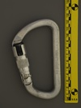

| Image | Summary | ||||
|---|---|---|---|---|---|
 | Black Diamond Superlock (25kN) | asymmetric D | assisted | lift-and-twist | basic twistlock plus manually activated secondary autolock |
| Black Diamond Superlock (25kN) (black finish) | asymmetric D | assisted | lift-and-twist | basic twistlock plus manually activated secondary autolock | |
| Black Diamond Superlock (27kN) | asymmetric D | assisted | lift-and-twist | basic twistlock plus manually activated secondary autolock | |
 | Black Diamond Superlock (28kN) (1 cm batch code) | asymmetric D | assisted | lift-and-twist | basic twistlock plus manually activated secondary autolock |
|  | Black Diamond Superlock (28kN) (1½ cm batch code) | asymmetric D | assisted | lift-and-twist | basic twistlock plus manually activated secondary autolock |
| Black Diamond Superlock (28kN) (spine.exterior batch code) | asymmetric D | assisted | lift-and-twist | basic twistlock plus manually activated secondary autolock | |
| Black Diamond Superlock (28kN) (½ cm batch code) | asymmetric D | assisted | lift-and-twist | basic twistlock plus manually activated secondary autolock | |
| Black Diamond Superlock (prototype) | asymmetric D | assisted | lift-and-twist | prototype model of the innovative BD Autolocker |